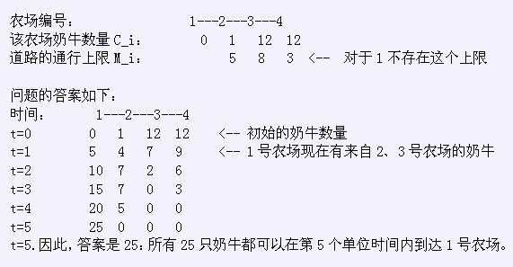

Farmer John有一张N个农场构成的网络(1 <= N <= 100,000) ，我们将农场标记为1N。
农场被N-1条单向道路连接，保证从任何一个农场可以到达1号农场。FJ想让奶牛到1号农场集中
（P.S. 至于要做什么我也不知道）。
对于每个农场i > 1都有一条单独的单向道路通往P_i，并且这个农场里有C_i只奶牛
（1 <= C_i <= 1,000,000,000）。在每个单位时间里，这条道路允许不超过M_i
(0 <= M_i <= 1,000,000,000)只奶牛从农场i走到农场P_i (1 <= P_i <= N)。
Farmer John 想让所有的奶牛都集中在1号农场（农场容纳奶牛的数量是没有限制的）。
下面是奶牛集中到1号农场过程的规则：
* 我们认为时间是离散的
* 任何奶牛都可以在一个单位时间里走过任意多条道路。但是，必须满足每条道路的上限M_i。
* 奶牛从来不会离开1号农场。
换句话说，每一个单位时间，每只奶牛可以选择下面行动之一：
a) 留在当前的农场
b) 经过一条或者多条道路，向1号农场移动。同样，需要满足每条道路的上限M_i。
FJ想知道有多少奶牛可以在某个特定的时刻到达1号农场。特别的，他有一张列着K (1 <= K <= 10,000)
个时间T_i (1 <= T_i <= 1,000,000,000)的单子，他想知道对于每个T_i，如果采用最优
的策略在这个时刻结束时最多能有多少奶牛到达1号农场。
考虑如下一个样例（树退化成链），列表里只有T_1=5一个时刻，奶牛如下分布：
